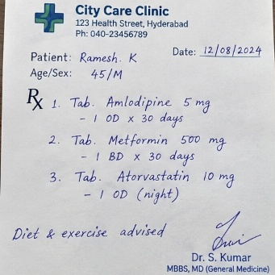
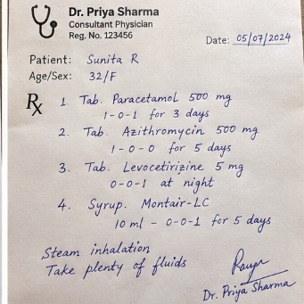
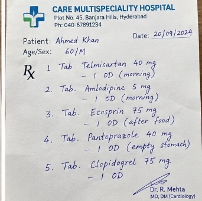
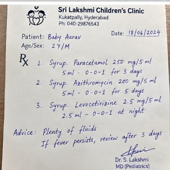
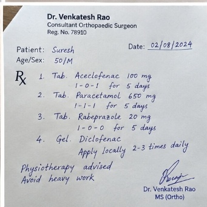
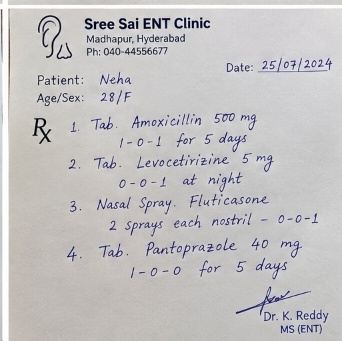

Welcome to CareCompass
Understand prescriptions & lab reports with instant OCR, follow a unified health timeline, and track your wellness in plain language. ABDM compliant. Never a diagnosis.
Doctor Rx Scanner & RAG
Scan handwritten prescriptions with Vision AI and RAG knowledge retrieval trained on 6 real clinical doctor prescriptions.
Health Profile
Manage personal metrics: age, gender, blood group, weight, and health status.
Record OCR & Intelligence
Extract medicines, dosages, test values and diagnoses from prescriptions and reports.
Unified Health Profile
Consolidate your patient journey, active medications and chronic conditions timeline.
ABDM & ABHA Link
Connect your ABHA ID and export standardized HL7 FHIR R4 clinical bundles.
Chat Copilot
Ask health questions with live emergency safety checks and careful clinical answers.
Lab Explainer
See what clinical values mean and what targeted questions to ask your doctor.
Doctor Visit Prep
Turn symptoms and meds into a one-page summary for your next consultation.
Wellness Journal
Log symptoms, sleep, mood, and water intake with SVG trend analytics.
Architecture & Slides
Interactive data pipeline diagram, ABDM schema, and hackathon presentation deck.
🛡️ Safety first
Emergency phrases like chest pain or self-harm are caught before any answer and routed to real emergency services (112 / 911 / 999).
🔒 Private by design
Your records, journal, and profile stay strictly on your device. Zero cloud tracking.
Welcome back
Demo login: any email and a password of 6+ characters. Nothing is sent to a server.
Personal Health Profile
Manage personal demographics, blood group, vital weight, BMI, and active clinical health status. Stored securely and privately on your device.
Edit Personal Health Information
Separate multiple health conditions with commas
Profile Not Configured
Enter and save your personal details on the left
Current Health Status & Diagnoses
Emergency Information
🔒 On-Device Privacy
Your name, age, blood group, weight, and health status are saved strictly within your browser's local sandbox (LocalStorage). Nothing is shared with advertisers or third parties.
🩺 Trained Real Doctor Prescriptions
Select any real clinic prescription below to simulate scanning, entity extraction, and RAG knowledge retrieval:

City Care Clinic · 12/08/2024
Dr. Priya Sharma · 05/07/2024
CARE Multispeciality · 20/09/2024
Sri Lakshmi Clinic · 18/06/2024
Dr. Venkatesh Rao · 02/08/2024
Sree Sai ENT · 25/07/2024City Care Clinic
💊 Recognized Medicines Table
3 Medicines Confirmed| Medicine Name | Strength / Form | Schedule / Frequency | Duration | Instructions | Status |
|---|
🧠 RAG Plain-Language Translation
💬 Ask Copilot About This Prescription
Medical Record Intelligence & Database Store
Ingest prescriptions, lab reports, and clinical records. Stored in IndexedDB and understood by your AI Copilot.
Clinical Data & Safety Error Auditor
🗄️ Clinical Database Records
🟢 IndexedDB Active (0 Stored)Records stored in your local browser database. All active prescriptions are automatically indexed and available to Chat Copilot.
1. Ingest Medical Document
Choose a realistic sample or drop a file:
Drag & drop medical record here
Supports images (JPG, PNG) or PDFs / Clinical Text
2. Extracted Clinical Intelligence
| Medicine | Dosage | Frequency | Instructions |
|---|---|---|---|
| No medicines extracted yet | |||
| Test | Value | Normal | Status |
|---|---|---|---|
| No test values extracted yet | |||
💡 AI Health Summary in Simple Language
Language: EnglishSummary in Simple Words
Select or upload a record above to see an empathetic, jargon-free health explanation with everyday analogies.
🔍 What Abnormal Values Mean
Insights will appear here.
💊 Medication Safety & Schedule
Medication advice will appear here.
❓ Questions for Your Doctor
Recommended questions for your next consultation will appear here.
Unified Health Profile & Timeline
Consolidated chronological view of all hospital visits, prescriptions, diagnostic labs, and active conditions.
Profile Not Set
Age -- · Gender -- · Blood Group: --
Known Health Status: None entered
Emergency Contact: Not set
Active Conditions (Problem List)
Current Active Medications
Key Biomarkers Trend
Longitudinal Health Timeline
ABDM / ABHA Readiness & FHIR R4 Standards
Native alignment with the Ayushman Bharat Digital Mission (ABDM). Link your 14-digit ABHA ID, manage consent, and export standardized HL7 FHIR R4 clinical bundles.
ABHA Digital Health Card
Link / Verify ABHA ID
ABDM Consent Manager (HIU / HIP Simulator)
ABDM ensures patient-mediated consent before clinical records are shared with any Health Information User (HIU).
HL7 FHIR R4 Clinical Bundle
FHIR R4 JSONStandardized schema mapping DiagnosticReport, Observation (LOINC), MedicationRequest (RxNorm), and Condition (ICD-10).
CareCompass Architecture & Hackathon Deck
Deliverable 3.2 & 3.3: Data pipeline, OCR/AI components, storage, ABDM-ready schema, and interactive slide deck for presentation.
End-to-End Pipeline Architecture
Click any pipeline block to inspect its processing mechanism, security, and standards:
Component Details
Select any stage above to see architectural technical details.
Interactive Hackathon Pitch Deck
Slide 1 of 5Use controls below or click dots to present to judges:
Chat Copilot & Voice Assistant
🗄️ Database: 0 records synced🎙️ Voice Assistant enabled · Voice responses support English, Hindi, Telugu, and Tamil.
Voice Lang: en-INHospital Discharge Summarizer & Course Breakdown
Translates dense, technical hospital discharge summaries into clear, reassuring patient roadmaps. Understand the admission reason, hospital course, discharge medications, and critical warning signs.
✍️ Enter & Generate Your Hospital Discharge Summary
Kavita Sharma (42/F)
Loading plain-language summary…
💊 Discharge Medications
3 PrescribedMedicines & Dosages Extractor
Decodes Latin doctor frequencies (OD, BD, TDS, HS, SOS), meal coordination, and timings into an organized, foolproof daily pill schedule with drug indications and interaction warnings.
➕ Add Your Medication to Daily Schedule
⏰ Daily 4-Period Pillbox Schedule
📋 Detailed Medication Monograph Cards
Loading medications…Appointment Dates & Follow-up Scheduler
Automatically detects review dates from prescriptions, hospital discharge notes, and clinical encounters. Provides live countdowns, pre-visit checklists, and 1-click sync to your device calendar (.ics).
Explain Medical Records & Labs in Plain Language
Demystifies dense diagnostic reports, blood test biomarkers, and clinical jargon using simple 5th-grade reading level explanations and intuitive everyday analogies. Never guess what a test result means.
🔬 Enter Your Lab Test Result to Explain in Plain Language
🔍 Medical Jargon Instant Decoder
🔬 Key Biomarker Explanations & Everyday Analogies
Doctor Visit Prep
Your one-page summary will appear here.
Wellness & Symptom Journal
Trends
Contact us
Get in touch
📧 support@carecompass.example
🕘 Mon-Fri, 9am-6pm IST
Not for emergencies. If you or someone else is in danger, call local emergency services now.
This is a hackathon demo form; messages are not sent anywhere.
Safety & Privacy
🚨 Emergency detection
Every message is scanned first. Chest pain, breathing trouble, stroke signs, overdose, severe bleeding or self-harm trigger an emergency card, not a chat answer.
🚫 No diagnosis or dosing
CareCompass explains and prepares. It does not diagnose, prescribe, or tell you to start or stop medication.
🔒 On-device data
Journal entries and uploaded records stay in your browser. Use "Clear" to remove them anytime.
👩⚕️ Always see a clinician
Every answer ends with when to see a doctor. Personal decisions belong with a licensed professional.
Crisis help
India: Tele-MANAS 14416 · US: 988 · Emergency: 112 / 911 / 999